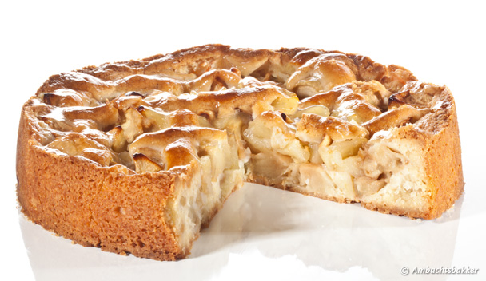

Real and authentic made apple pie

Let the raisins well in some handwarm water.
Preheat the oven at 165 degrees Celsius.
Mix the butter until it is softened and add the mixture with the egg.
Mix everything until well-combined.
Take 2/3 of the dough and create the bottom and the sides of the pie in a baking tin.
Cut the apples in small cubicles.
Mix the apples with the raisins, sugar and cinnamon.
Put the apple mixture in the baking tin.
Create with the last piece of dough the lines on top of the pie.
Bake the pie for about 60-75 minutes and let it cool for 1 hour before eating.
200 grams of secret Dutch mixture
175 grams of butter
1 egg
1 kilograms of appels
50 grams of sugar
75 grams or raisins
3 teaspoons of cinnamon